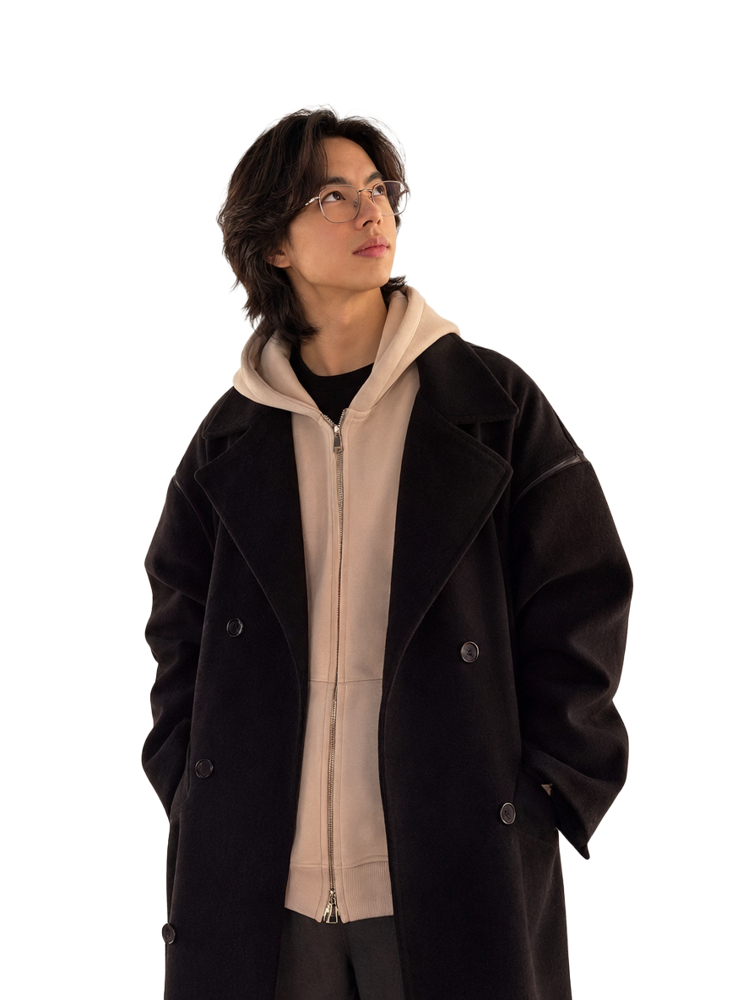
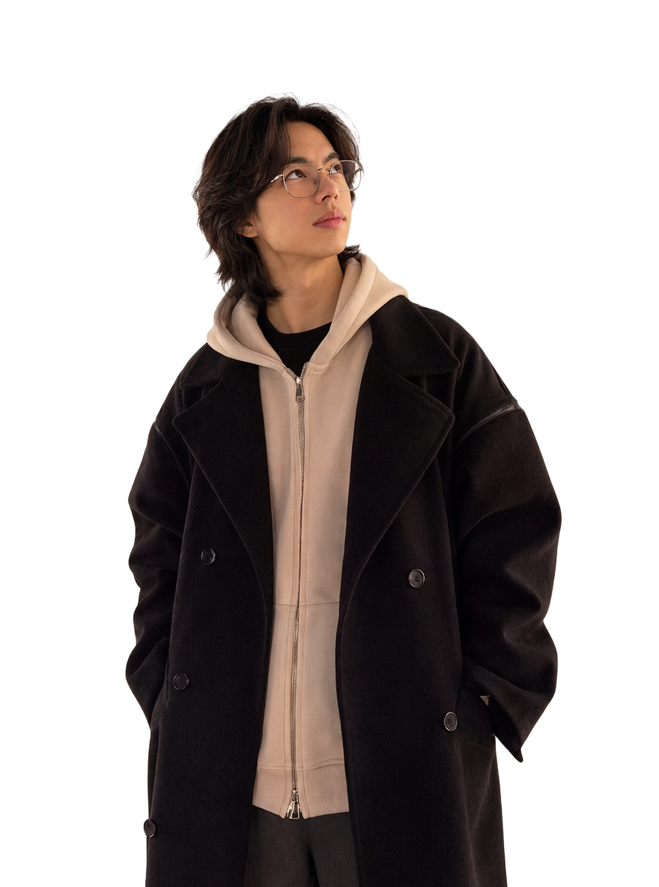

CRAFT ID // CLY-VINCENT · HKG · 22.32°N 114.17°E
Systems rigor × Editorial taste
( 01 )
About
I engineer software that feels inevitable.

( 02 )
Selected work · 04
Things I’ve built
( 03 )
Toolkit
24 tools · 4 disciplines
( 04 )
Contact
Let’s build something.
Open to internships, collaborations and good conversations
vincentchung413@gmail.com